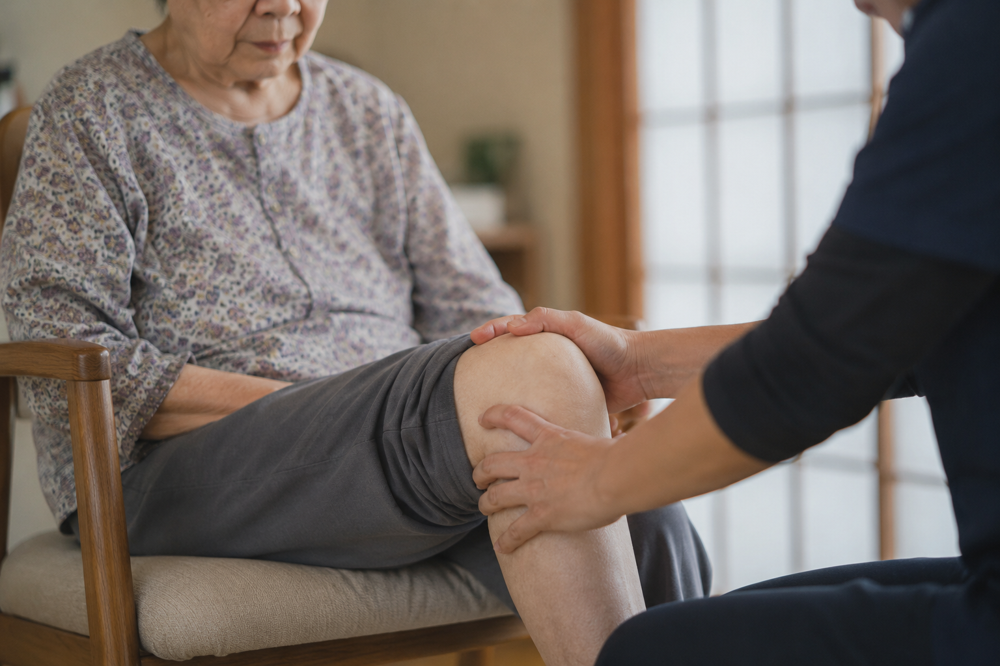

南大沢・町田エリアで膝の痛みにお悩みの方へ
階段の昇降が辛い、歩くのが不安といったお悩みに。町田市・八王子市周辺のご自宅で受けられる訪問鍼灸マッサージをご提案します。
このようなお悩みはありませんか？
-
立ち上がる時に膝が「ピキッ」と痛む
-
階段の上り下り、特に「下り」が辛くなってきた
-
これまでは歩けていた距離が、痛みで億劫になった
-
膝が腫れている、または重だるい感じがする
なぜ、膝が痛むのでしょうか？
加齢に伴う軟骨の摩耗や、太もも周りの筋力低下によって膝関節への負担が増えることが主な原因です。しかし、最も危険なのは痛みによって「動かなくなる」ことで筋肉がさらに衰え、症状が悪化するという負の連鎖に陥ることです。
放置するリスク：将来の生活への影響
膝の痛みを放置すると、歩行能力が低下し、やがて「フレイル（虚弱）」が進行します。活動範囲が狭まることで、ご家族の介護負担が増えるだけでなく、寝たきりのリスクを大幅に高めてしまいます。
「痛みの緩和」から「歩ける喜び」まで
私たちは単なるマッサージや運動指導に留まりません。3つのアプローチを統合し、あなたの「一生歩き続ける」をチームで支えます。
安心してご相談いただける理由
多職種の専門家チーム
理学療法士、看護師、鍼灸按摩マッサージ指圧師、ケアマネジャー、行政書士が密に連携しています。
体に負担の少ないアプローチ
痛みのある状態で無理なことはさせません。一人ひとりの心身の状態に合わせた「優しいケア」を徹底しています。
未来のイメージ
70代・女性 改善事例
膝の痛みで引きこもりがちだった方が、週2回の運動と訪問施術を併用。半年後には「自分で行きたい場所へ行ける」自信を取り戻し、お孫さんと公園へお出かけできるようになりました。

膝の痛みへの、べるつりーのアプローチ
階段の昇降が辛い、歩くのが不安といったお悩みへ。
痛みが強い時期は、無理に動かさず「訪問鍼灸マッサージ」でご自宅にて痛みの緩和と固まりを防ぐケアを行います。痛みが和らぎ「自分で歩きたい」と思えるようになったら、膝関節を支える太ももの筋肉などを鍛えるために「べるフィット」や「リーフ」での専門的な運動を取り入れます。痛みの緩和から筋力強化まで、一貫してサポートします。
関連する解決策（サービスの詳細）を見る
現在の状態に合わせた最適なサポートをご提案します。まずは無料相談にお進みください。
相談窓口へ進む